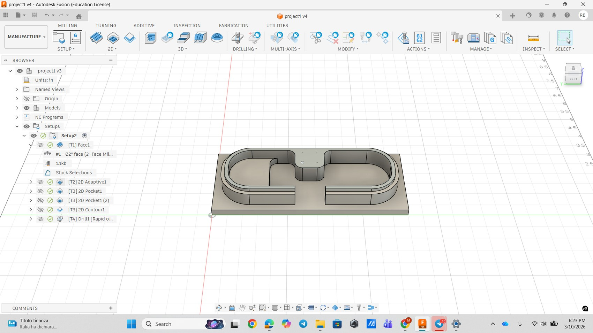
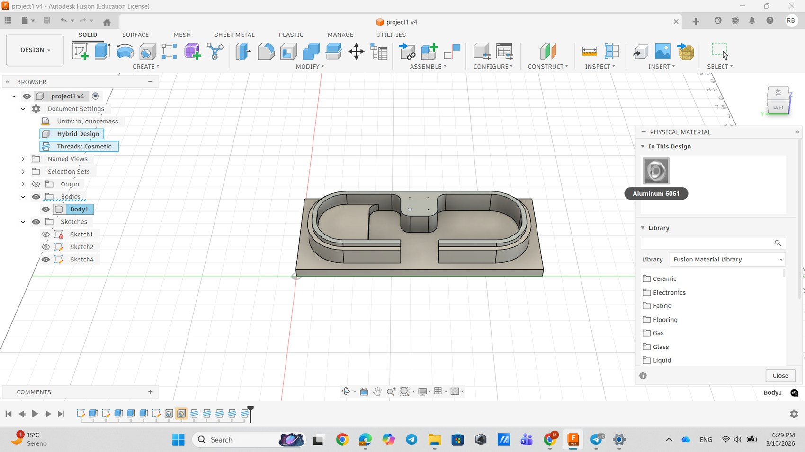
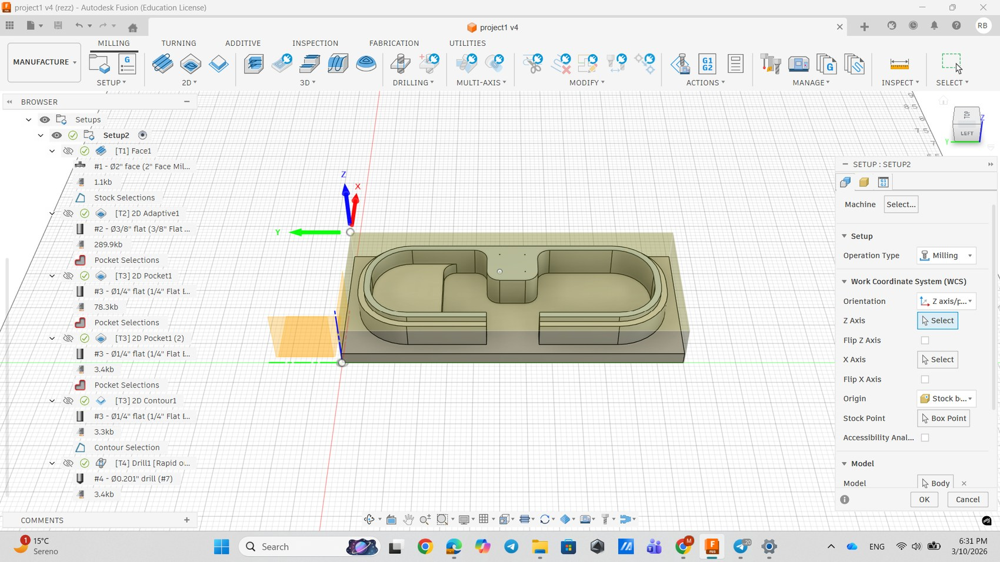
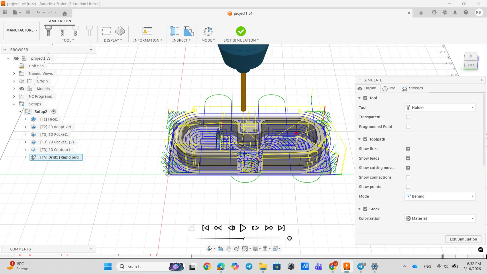
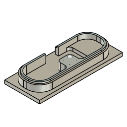
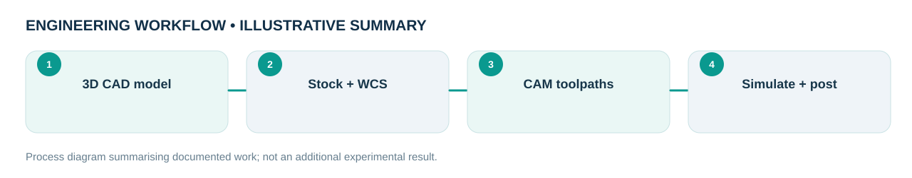

Engineering problem
How can a parametrically modelled aluminium part be translated into a verifiable two-dimensional CNC machining workflow?
Prepared a Fusion 360 CAD/CAM course challenge for an aluminium 6061 workpiece, setting up machining coordinates and tooling, then creating and validating a multi-operation 2-D milling workflow.
My role and technical ownership
Independently prepared the part geometry, material selection, machining setup, toolpath sequence, simulation and NC output for the course challenge.
How I approached the work
- Modelled the feature geometry in Fusion 360; assigned Aluminium 6061 as the workpiece material.
- Defined setup direction, work coordinate origin and stock definition to align programming with the intended fixture orientation.
- Sequenced Face, 2D Adaptive, Pocket, Contour and Drill operations rather than relying on one generic toolpath.
- Simulated material removal and used a generic 2D post-processor to export an NC file.
What the evidence shows
The supplied Fusion screenshots show the model, material assignment, setup parameters and toolpath simulation. The course report records complete simulated stock removal and exported NC output.
Design files, models & results
Original CAD screenshots, simulation plots or project photographs are shown wherever they were available. Select a figure to open the larger file. Workflow graphics are clearly labelled as illustrative.






Limitations and engineering learning
A CAM simulation and generic NC post do not establish physical machining quality or actual machine validation.
Engineering takeaway: Digital verification demonstrates process planning, not physical machining accuracy. No measured surface finish, actual cycle time or produced hardware is claimed.